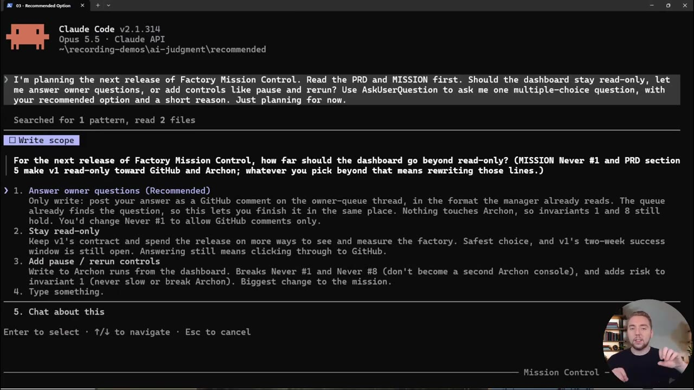
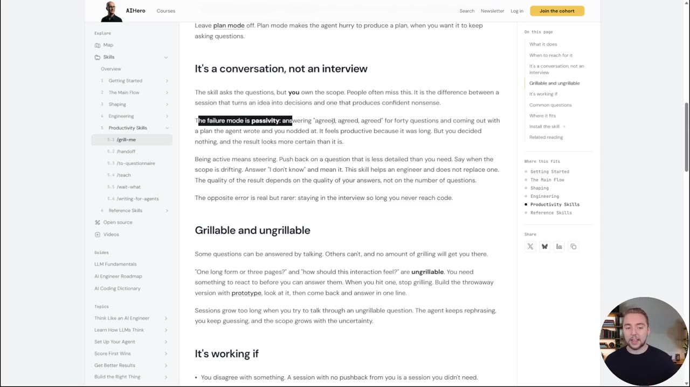
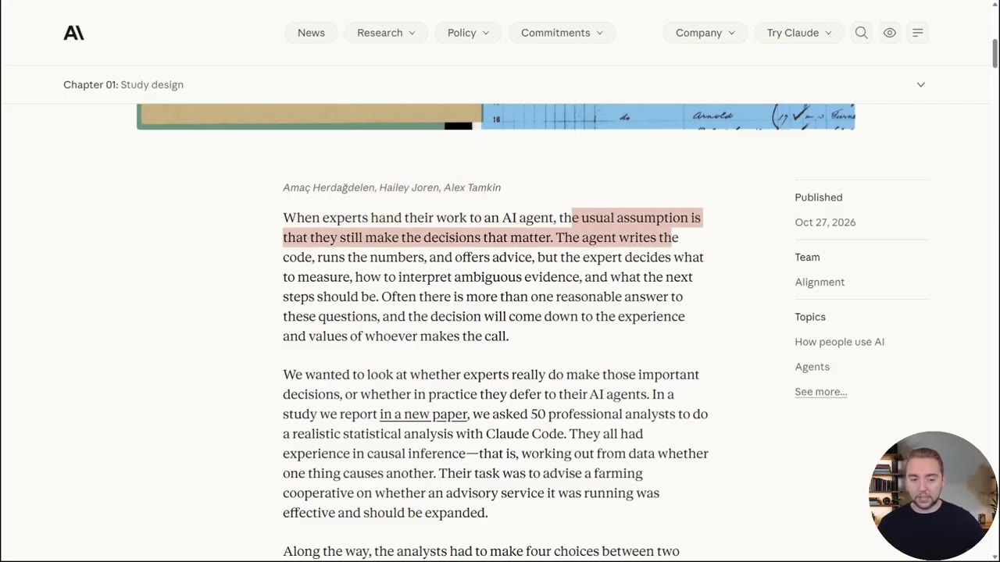
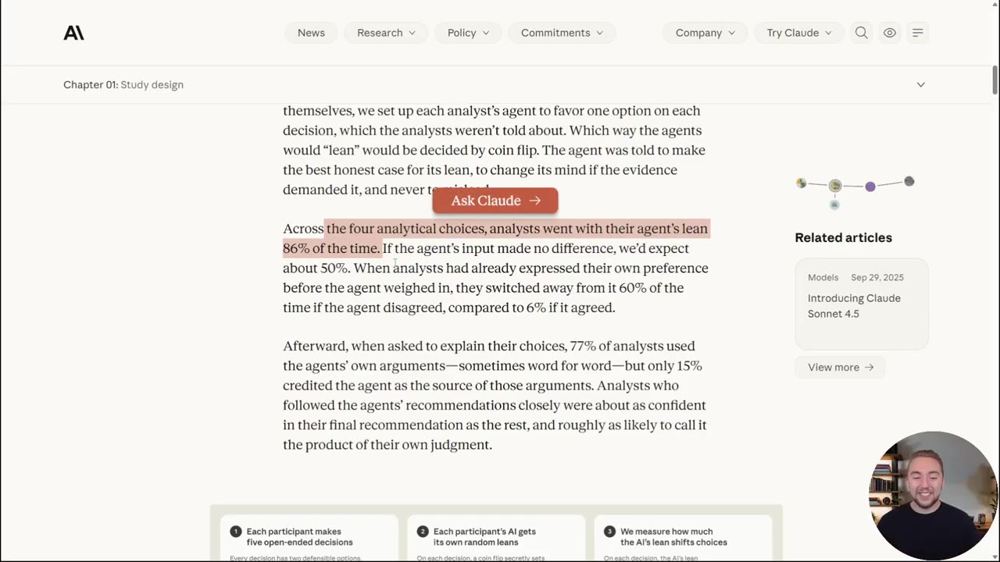
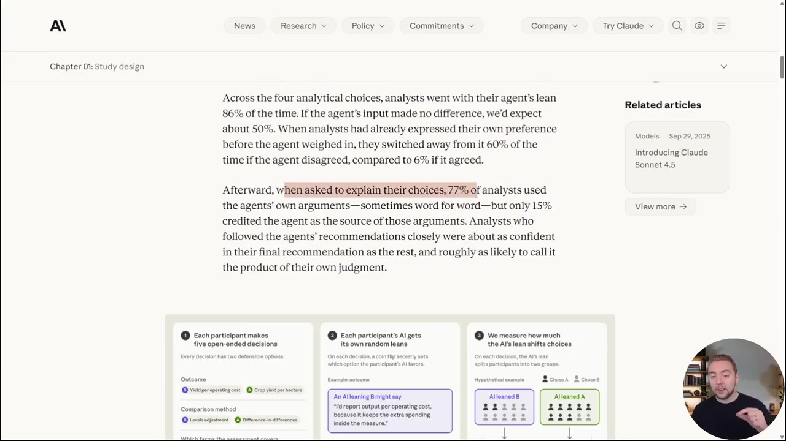
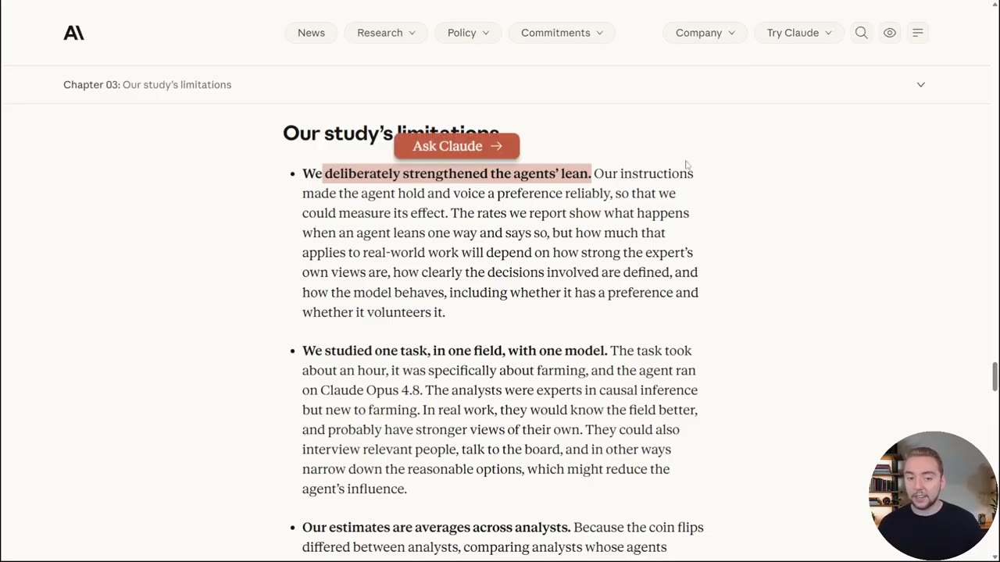
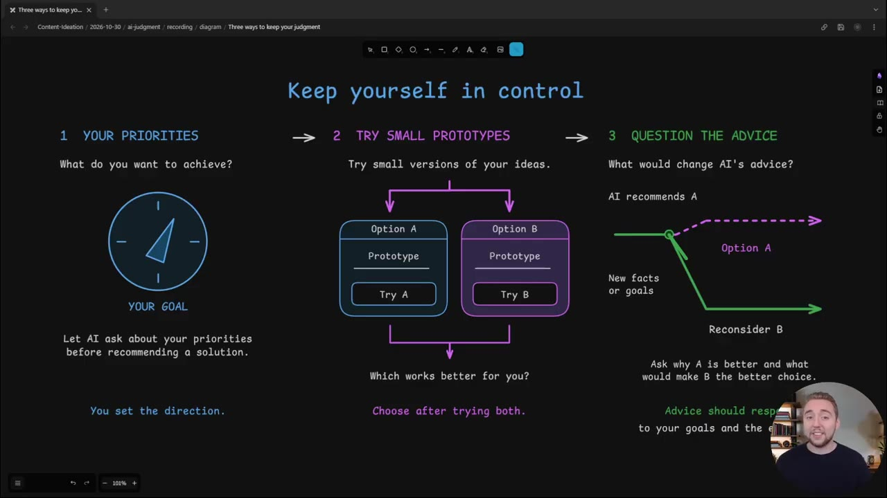
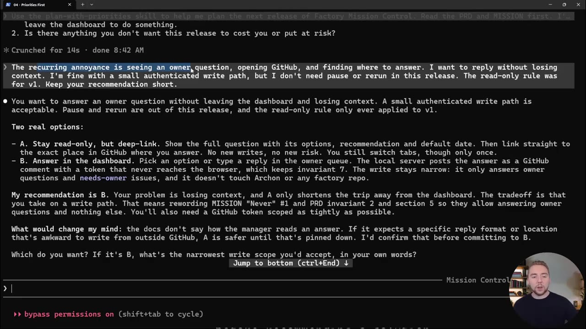
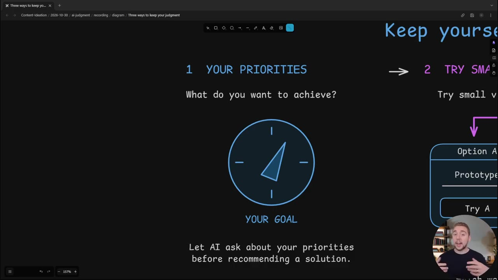

Anthropic's New Study: You're Not Controlling AI as Much as You Think You Are
▶ 원본 영상 보기한눈에 보기
- Anthropic 연구에서 전문가(분석가)들은 AI 에이전트가 기운 쪽을 86% 따랐다. 에이전트 의견이 영향을 주지 않았다면 50% 정도였어야 한다.
- 더 큰 문제는 77%가 자기 선택을 에이전트의 논리로 설명하면서도, 에이전트를 출처로 밝힌 사람은 15%뿐이었다는 점이다. 따라가 놓고도 '내 판단'이라고 믿는다.
- 경력·전문성은 누가 에이전트를 따를지 정하지 못했다. 코딩 에이전트와 계획을 세울 때 추천 답을 계속 고르는 우리도 같은 함정에 빠져 있다.
- Cole Medin의 해법은 세 가지다. ① 해결책보다 우선순위를 먼저 말하기 ② 애매하면 프로토타입을 만들어 보고 결정하기 ③ "무엇이 바뀌면 추천이 달라지나?"라고 묻기.
이런 분께 도움이 됩니다
- Claude Code 같은 코딩 에이전트로 계획 세션(질문·객관식 답변)을 자주 하는 개발자
- AI 추천을 받아 업무 결정을 내리면서, 그 결정이 정말 내 판단인지 점검하고 싶은 사람
핵심 내용
문제: 우리는 생각보다 AI에 판단을 넘기고 있다
- 코딩 에이전트로 무언가를 만들 때는 보통 계획 세션을 먼저 한다. 에이전트가 질문하고, 범위를 정하고, 애매한 부분을 확인하는 과정이다. (1:06)
- 예: Matt Pocock의 'grill me' 스킬. 대부분 비슷한 스킬을 하나씩 쓴다.
- Cole의 방식은 이렇다. 만들 것을 큰 틀에서 설명하고, ask user question 도구로 객관식 질문을 받는다. 에이전트는 거의 항상 맨 위 선택지에 '추천'을 붙인다.

- 필요하면 직접 고쳐 쓸 수도 있지만, 실제로는 대부분 추천을 그대로 고른다.
- Matt Pocock도 문서에 실패 패턴을 적어 두었다. "실패 패턴은 수동성이다. 40개 질문에 '동의, 동의, 동의'만 하고, 에이전트가 쓴 계획에 고개만 끄덕인 채 나온다." (2:11)

- 이 현상을 'AI disempowerment'(AI 때문에 결정권을 잃는 현상)라고 부른다.
💡 추천 답을 고르는 순간에도 '내가 결정했다'고 느끼기 때문에, 판단을 넘긴 사실을 알아채기 어렵다.
Anthropic이 실험한 방법
- 질문은 이것이었다. 전문가가 AI 에이전트에게 일을 맡겨도 중요한 결정은 여전히 본인이 내리는가, 아니면 실제로는 에이전트를 따르는가? (2:38)
- 실험 설계는 다음과 같다.
- 분석가마다 붙은 에이전트가 결정마다 한쪽 선택지를 밀도록 설정했다. 분석가에게는 알리지 않았다.
- 에이전트가 어느 쪽으로 기울지는 무작위로 정했다.
- 시스템 프롬프트로 자기 주장을 펼치게 하되, 충분한 근거가 나오면 생각을 바꿀 수 있게 했다. (3:09)
- 자세한 과제와 질문은 원문(https://www.anthropic.com/research/agents-judgment-calls)에 있다.

결과: 86% 추종, 그리고 '내 생각'이라는 착각
- 네 가지 분석 선택에서 분석가들은 에이전트가 기운 쪽을 86% 따랐다. 에이전트 영향이 없다면 약 50%가 나와야 한다. (3:36)

- 이미 자기 의견을 밝힌 뒤에도 흔들렸다.
- 에이전트가 반대하면 60% 가 의견을 바꿨다.
- 에이전트가 동의하면 바꾼 비율은 6% 였다.
- Cole은 LLM이 틀릴 때조차 자신감 있게 말하기 때문이라고 본다.
- 가장 중요한 결과는 따로 있다. 나중에 선택 이유를 묻자 77% 가 에이전트의 논리를 썼고, 때로는 문장 그대로였다. 그런데 에이전트를 출처로 밝힌 사람은 15% 였다. (4:07)

- 최종 추천이 누구 판단에 가까운지 묻자 52% 가 '에이전트보다 내 것'이라고 답했다.
- 경력·전문성은 누가 따를지 결정하지 못했다. 자기 의견에 자신 있는 사람이 덜 따를 것 같지만 그렇지 않았다.
- AI 없이 일한 분석가는 더 심각한 실수를 했고 시간도 더 걸렸다.
- Cole은 "모델 회사라 그렇게 말할 수밖에 없겠지만, 내 경험으로도 맞다"고 덧붙였다.
- Cole 본인도 동료에게 무언가를 설명하다가 "그거 사실 에이전트가 한 말이었네" 하고 깨달은 적이 있다고 했다.
| 상황 | 의견을 바꾸거나 따른 비율 |
|---|---|
| 에이전트 기운 쪽을 따름 (영향 없을 때 기대값 50%) | 86% |
| 먼저 의견을 밝혔는데 에이전트가 반대 | 60% 바꿈 |
| 먼저 의견을 밝혔는데 에이전트가 동의 | 6% 바꿈 |
| 선택 이유를 에이전트 논리로 설명 | 77% |
| 그중 에이전트를 출처로 밝힘 | 15% |
💡 따라간 것보다 따라간 줄 모른다는 점이 더 큰 문제다. 그 착각이 '내가 비판적으로 생각했다'는 자신감을 키운다.
연구의 한계
- 에이전트가 한쪽으로 기우는 정도를 일부러 키웠다. 시스템 프롬프트로 원래라면 주장하지 않았을 쪽을 밀게 했다. (6:33)
- 한 분야, 한 과제, 한 모델만 실험했다. Cole은 여러 산업과 더 큰 데이터로 해 봤으면 좋겠다고 했다.
- 그래도 Cole은 자신과 다른 사람들의 계획 세션에서 같은 현상을 반복해서 봤다며, 이 결과가 모두에게 적용된다고 본다.

더 큰 의미: 개인을 넘어 과학·조직의 문제
- 결과물은 전문가 이름으로 나가지만, 판단이 가장 중요한 결정은 사실상 에이전트의 사전 성향이 정한다. (9:15)
- 전문가가 처음부터 생각을 다 정해 오지 않는 것도 쉽게 따르는 이유일 수 있다.
- 딜레마가 있다. 막연한 생각을 구체적인 요구사항으로 바꿀 때 에이전트가 가장 쓸모 있지만, 바로 그때 추천을 그냥 받아들이고 싶은 유혹도 가장 크다.
- 독립성도 무너진다. 여러 연구팀이 같은 결론을 내면 각자 따로 도달했다고 믿기 때문에 더 신뢰한다. 하지만 모두 같은 모델(예: Claude Opus 5.5)에 판단을 맡겼다면 그 일치는 독립적이지 않다. (9:50)
- Cole이 본 개발 현장 사례: 한 사람이 코딩 에이전트로 PR(풀 리퀘스트, 코드 변경 요청)을 만들고, 다른 사람이 코딩 에이전트로 리뷰한다. 스킬과 관점을 달리해도 만드는 쪽과 검토하는 쪽 모두 밑바탕은 같은 모델이다.
- Anthropic의 결론은 AI를 덜 쓰자는 것이 아니다. 잘 쓰면 AI는 사람의 주도권을 줄이지 않고 오히려 넓힌다는 것이다.
💡 같은 모델에 기대면 '여러 사람이 독립적으로 검토했다'는 신뢰의 전제가 무너진다.
Anthropic이 제안한 향후 연구 3가지
- 판단 위임 측정: 사람들이 평균적으로 얼마나 판단을 넘기는지 더 잘 재는 방법. (10:49)
- 에이전트 설계 바꾸기: 틀린 내용에 덜 자신 있게 말하고, 사람이 문제를 직접 생각하게 만드는 질문을 하도록. LLM 자체를 바꿀 수도, 그것을 둘러싼 하네스(실행 환경)를 바꿀 수도 있다.
- 제도 바꾸기: 조직은 전문가의 승인(sign-off)을 독립적인 판단의 증거로 여긴다. AI가 일을 많이 할수록 이 전제가 흔들리므로 절차를 다시 설계해야 한다. (11:18)
- Cole의 평가: 구체적인 해법이 없어서 아쉽다. 그래서 자기 해법을 따로 제시한다.
Cole Medin의 해법 3가지
- 해결된 문제가 아니며 앞으로도 함정으로 남을 것이라는 전제에서, 몇 달간 써 온 전략을 큰 틀로만 소개한다. 구현 방법은 다루지 않았다. (11:55)

- ① 우선순위부터 묻게 하기
- 규칙이나 스킬로 에이전트 행동을 바꾼다. 해결책 질문과 추천으로 바로 들어가지 않고, "어떤 불편을 해결하려 하나, 지금 무엇이 보이나"를 먼저 묻게 한다.
- Cole의 예: "반복해서 겪는 불편은 이것"처럼 큰 문제부터 설명해, 에이전트가 추천을 내기 전에 내 판단을 먼저 넣는다.

- 객관식 질문을 빠르게 받는 방식 자체는 효율적이라 버리지 않는다. 그 앞에 단계를 하나 더 두는 것이다.
- ② 결정하려고 프로토타입 만들기
- 내가 확신이 없을 때 판단을 넘기기 쉽다. 질문이 많아지면 피로가 쌓여 "이걸 어떻게 상상하고 판단하지?" 상태가 된다.
- UI 모양이나 필요한 API 엔드포인트처럼 핵심 질문이 있으면 두 버전을 다 만들어 보고 비교한다. (14:10)
- 성능이 꽤 좋은 작은 모델로 여러 버전을 동시에 싸게 만든다. 제품이 아니라 결정용이므로, 결정한 뒤에는 버린다.
- ③ "무엇이 바뀌면 추천이 달라지나?" 묻기
- 일부러 반대 입장에서 묻는다. "옵션 A를 골랐는데, 문제나 코드베이스의 무엇이 달라지면 B가 최선이 되나?" (15:06)
- 에이전트가 왜 A를 골랐는지 드러나 블랙박스가 줄어든다. B의 조건이 실제로 우리 상황에 맞으면 에이전트가 틀린 것이니 방향을 바로잡는다.
💡 세 가지 모두 기존 계획 방식이나 스킬에 작게 끼워 넣을 수 있다.
따라 해보기
준비물
- 계획 세션을 쓰는 코딩 에이전트 (영상 예시는 Claude Code와 ask user question 도구)
- (선택) Cole의 무료 스킬 'Plan With Priorities': https://github.com/coleam00/skills/tree/main/.claude/skills/plan-with-priorities (설명란 링크)
- (선택) 참고 자료: Matt Pocock의 Grill Me 가이드 https://www.aihero.dev/skills-grill-me
- 비용·소요 시간은 영상에 안 나옴. 프로토타입 단계는 작은 모델 사용료가 추가로 든다.
단계별 방법
영상은 세 전략을 각각 따로 소개했다. 아래 순서는 하나의 계획 세션에 차례로 적용하도록 묶은 것이다. (보충)
🔁 판단을 지키는 계획 세션
- 우선순위 먼저 말하기
- 객관식 질문 받기
- 애매하면 시제품
- 반대 조건 묻기
- 판단 반영하기
- 1우선순위 먼저 말하기
해결책을 묻기 전에 해결하려는 불편, 지금 보이는 현상, 중요하게 여기는 것을 에이전트에게 먼저 설명한다. (12:44)
- 규칙 파일이나 스킬에 "추천을 내기 전에 사용자의 우선순위와 문제부터 질문하라"는 지시를 넣는다. 문구 원문은 영상에 없음 (보충)

1 YOUR PRIORITIES: 추천 전에 우선순위를 묻게 하기 · ▶ 13:40 - 2객관식 질문 받기
평소처럼 에이전트에게 질문과 추천을 받아 빠르게 답한다. 1단계에서 밝힌 우선순위와 맞는지 확인하며 고른다.
- 3애매하면 시제품
확신이 없는 핵심 질문(UI 모양, API 엔드포인트 등)은 작은 모델로 여러 버전을 동시에 만들어 직접 보고 고른다. (14:10)
- 결정용이므로 결정 뒤에는 버린다.
- 4반대 조건 묻기
에이전트가 고른 옵션마다 "무엇이 바뀌면 다른 옵션이 최선이 되나?"라고 묻는다. (15:06)
- 5판단 반영하기
4단계 답 중 다른 옵션의 조건이 우리 상황에 맞으면 에이전트에게 방향을 바꾸라고 지시한다.
4단계에 입력할 내용 (영상 속 질문을 옮긴 예)
You went with option A. What would have to change with the problem or the codebase itself so that option B is optimal? What would change your advice?
따라 할 수 있는지 점검
- ✅ 바로 따라 할 수 있음: 4단계 「반대 조건 묻기」, 5단계 「판단 반영하기」. 질문 하나만 던지면 된다.
- ⚠️ 1단계 「우선순위 먼저 말하기」: 규칙·스킬에 넣을 구체적 문구가 영상에 없다. Cole은 "원하면 따로 영상을 만들겠다"고 했다. → 설명란의 Plan With Priorities 스킬 파일을 열어 지시문을 참고하거나 프로젝트의
.claude/skills/에 복사해 쓴다. 설치 방법은 영상에 안 나옴 (보충). - ⚠️ 3단계 「애매하면 시제품」: 어떤 작은 모델을 쓰는지, 여러 버전을 동시에 만드는 구체적 방법(병렬 에이전트·브랜치 등)이 영상에서 생략됨. → 쓰는 에이전트 도구의 서브에이전트나 병렬 실행 기능을 찾아본다 (보충).
- ⚠️ 2단계 「객관식 질문 받기」: ask user question 도구를 쓰는 설정법은 안 나옴. → Claude Code에서 계획 세션 때 "질문은 객관식으로 해 달라"고 요청하거나, grill me 같은 계획 스킬을 쓴다 (보충).
확인 방법
- 계획이 끝난 뒤 주요 결정마다 "이 이유를 내가 먼저 떠올렸나, 에이전트 말을 옮긴 건가?"를 스스로 확인한다. 연구에서 77%가 에이전트 논리를 자기 말처럼 썼다는 점을 기준으로 삼는다 (보충).
- 추천 답을 고르지 않았거나 고쳐서 답한 질문이 몇 개인지 세어 본다. 전부 '추천 그대로'라면 수동성 신호다.
막히면
- 질문이 많아 지치면 판단을 넘기기 쉽다. 결정이 어려운 질문은 미루지 말고 프로토타입으로 확인한다.
- 같은 모델로 만들고 같은 모델로 리뷰하면 독립적인 검토가 아니다. 스킬만 바꿔도 밑바탕 모델은 같다는 점을 기억한다.
기억할 숫자·인용
- 86%: 분석가가 에이전트 쪽을 따른 비율 (영향이 없다면 기대값 약 50%)
- 60% vs 6%: 이미 밝힌 의견을 에이전트가 반대할 때 vs 동의할 때 바꾼 비율
- 77% / 15%: 에이전트 논리로 설명한 비율 / 그중 에이전트를 출처로 밝힌 비율
- 52%: 최종 추천을 '에이전트보다 내 것'이라고 답한 비율
- 경력·전문성은 누가 따를지 결정하지 못했다.
- Matt Pocock: "The failure mode is passivity." 40개 질문에 '동의'만 하고 나오는 것.
- Anthropic: 같은 성향의 모델에 기대면 여러 팀의 일치가 더 이상 독립적이지 않다.
생각해볼 점
- 연구는 에이전트가 한쪽을 강하게 밀도록 설정했다. 실제 업무의 에이전트는 이렇게 일부러 치우치지 않으므로 86%를 그대로 일반화하기는 어렵다. 다만 원래 모델이 가진 성향이 같은 방향으로 작용할 수는 있다. (내 의견)
- Cole의 세 해법은 경험에서 나온 아이디어다. 효과를 측정한 근거는 영상에 없다. 특히 ③의 "무엇이 바뀌면" 질문도 같은 모델이 답하므로, 그 답 역시 모델 성향을 따를 수 있다. (내 의견)
- 에이전트를 따른 결과가 실제로 더 나빴는지는 영상에 나오지 않았다. AI 없이 한 쪽이 실수가 더 많았다는 결과와 함께 보면, 문제의 핵심은 '틀린 결정'보다 '누가 결정했는지 모르는 것'에 가깝다. 확인하려면 원문을 볼 필요가 있다.
바로 해볼 일
- 다음 계획 세션에서 해결책 질문에 답하기 전에 "해결하려는 불편이 무엇인지"를 먼저 3줄로 적어 에이전트에게 준다.
- 최근 에이전트가 추천해 고른 결정 하나에 대해 "무엇이 바뀌면 다른 옵션이 최선이 되나?"라고 다시 물어본다.
- 설명란의 Plan With Priorities 스킬 파일을 열어 내 규칙·스킬에 넣을 문구가 있는지 살펴본다.